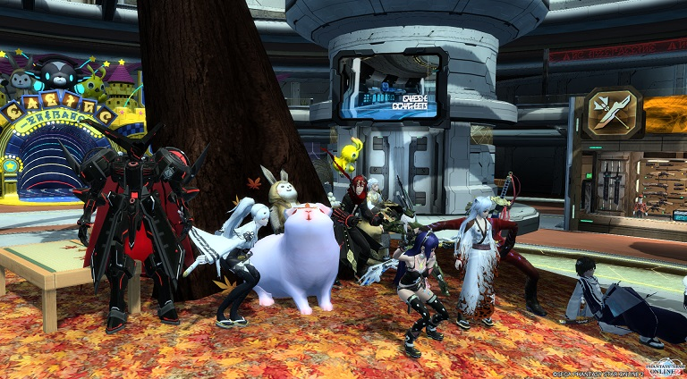

この記事の内容はチーム公式ページを転載したものになります。記事執筆者が実際にその場に居合わせたわけではありません。元の記事
グンネトリガー最盛期、マガツAIS、ナベチ周回等、時代を感じさせるものではありますが、この時から黎明期ではあったもののまだ存在していました。
「マガツはどうしても２PTばらばらになってしまったよ…。
チムメン12人で開催できる日が来ればきっと…。」
チムメン12人で、開催できる日が来ましたねぇ感慨深い。
複数Ｂ検索もない時代で、ナベチポータルスタートってガルグリだっけ？初代ガルグリ君かな？どえりゃー昔ですね。
流石にこの黎明期メンバーは見覚えのない方がほとんどですねぇ・・・・・・・・。キャストパーツやコスチュームに時代を感じます。レイヤリングウェアないしね。
このチームルームも初期にあったものですね・・・・
記事内容を見るに設立後１週間前後のもののようですね。この付近からチームルームでのイベントを実施していた、という感じですね。４年ももつチームはなかなかないですねぇ・・・・。
このロビーほんと昔から使いまわしてるな・・・ｗあれ・・・・この和服はフェネさん！？フェネさんかな！？（それ以外分からない）和服スタイルは今も昔も人気ですね。
ほかにも2015年内に行ったチームイベントは多数存在しますが、割愛させていただきます。以上の内容から年内に実施したイベントは以下の種類にまとめることができます。
定番イベントをこの時点で実施していたんですね。現在もこのイベントは実施しています。これ以降の記事でもいろいろなイベントがあるのでぜひじっくり見てくださいね。